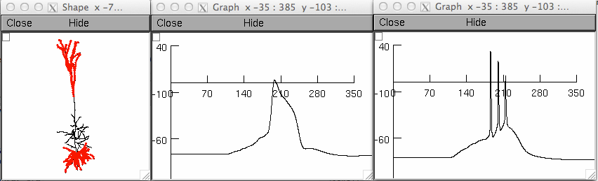

README FILE This is the model associated with the paper: Shai AS, Anastassiou CA, Larkum ME, Koch C (2015) Physiology of layer 5 pyramidal neurons in mouse primary visual cortex: coincidence detection through bursting. PLoS Comput Biol 11:e1004090 Except for the data folder, this filesystem follows that of the Hay et al., 2011 paper from which this work is based. The compSig.m and compSig.py files are functions written in matlab and python that take the number of tuft and basal synapses as input, and output the action potential frequency, as given in the Composite Sigmoid Model (Fig. 5). In the data folder the dat files contain the raw somatic and dendritic voltage traces for simulations containing distributed synapses (Fig. 3 and 4). Fig3.m is matlab code that plots those traces. Also in that folder is PhenomModels.m which contains the composite, mulitplicative, and additive models, and plots them. In the simulationcode folder, Run.hoc is code which distributes synapses along the basal and dendritic regions of the cell (seperately) and controls how many inputs are in each. The temporal distribution for the input is randomly chosen, as are their dendritic locations (the distSynsUniform2.hoc file performs the placing of the synapses). The whole simulation for Fig.4 takes a few days to run, so a simulation that runs one point in the parameter space with both somatic and dendritic inputs is included, named Fig3A.hoc. This simulation should take less than a minute to run and will generate graphs that look similar to those in Fig. 3A and 3B in the paper:: 